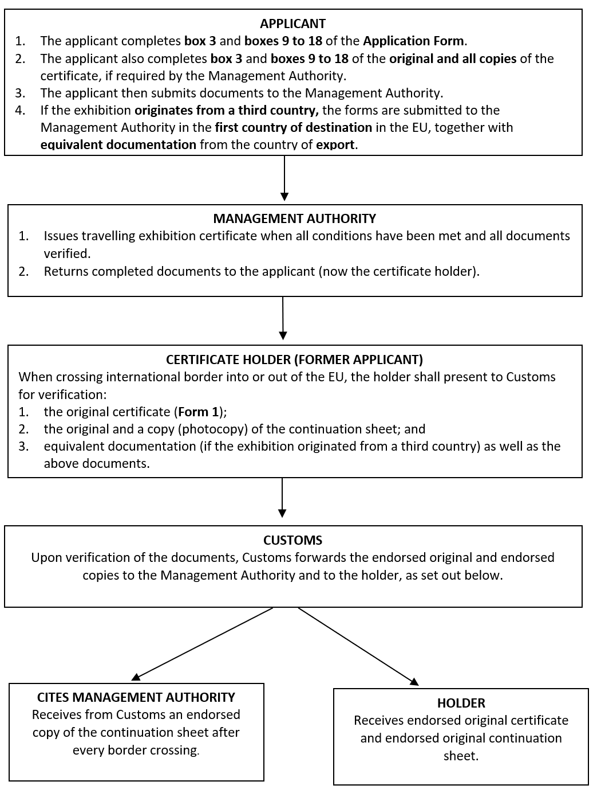
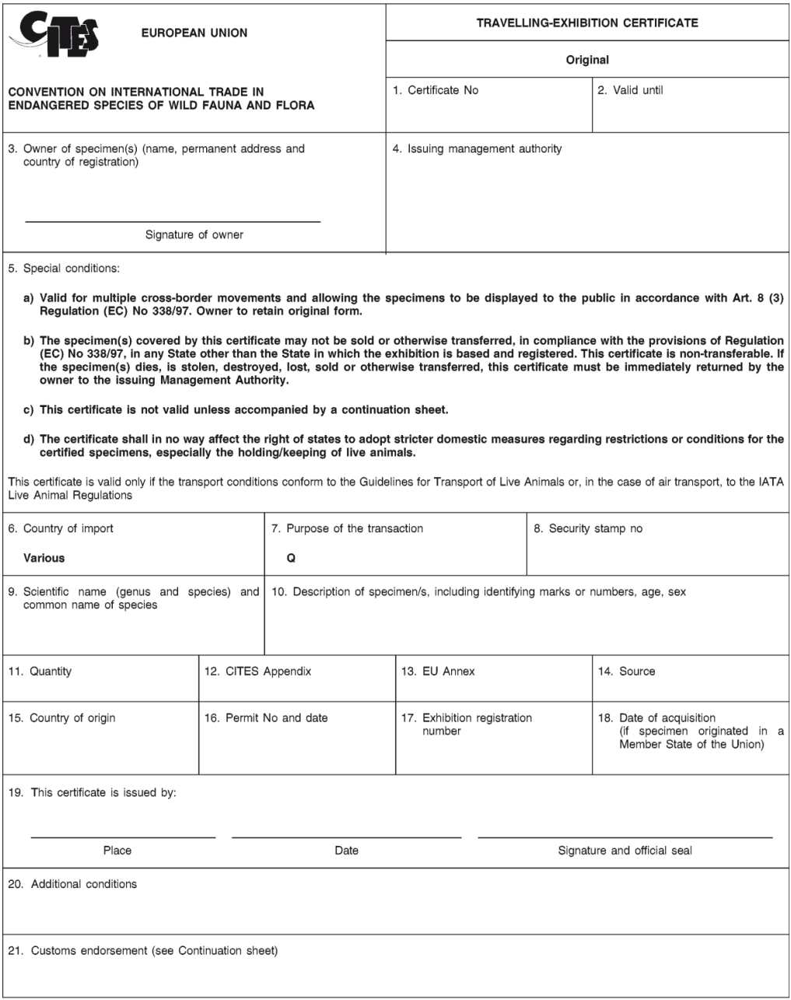
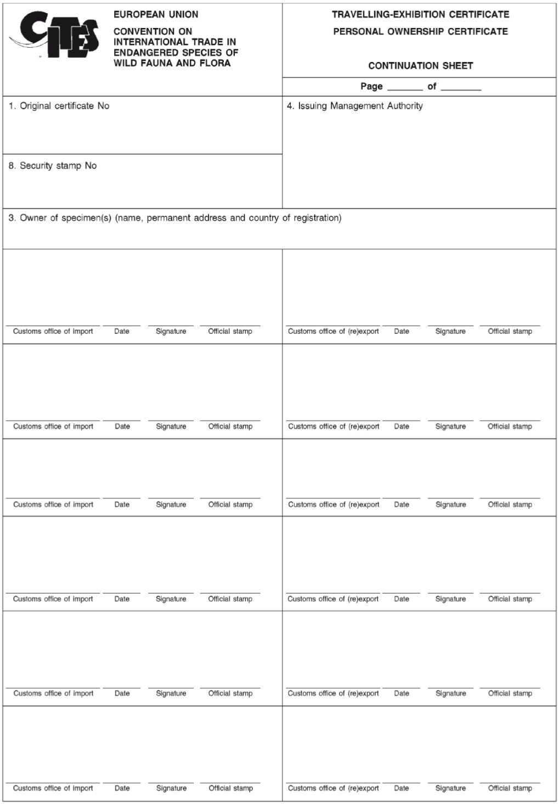
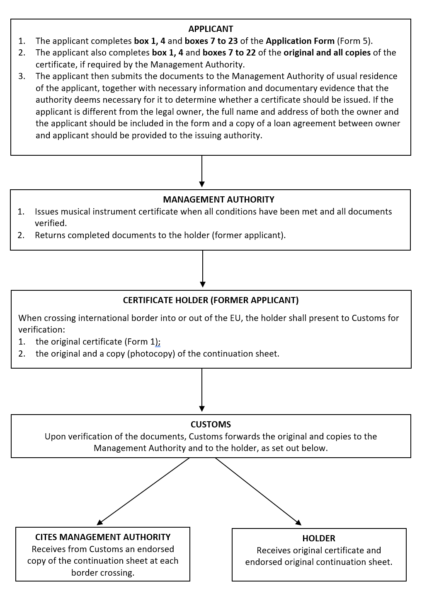
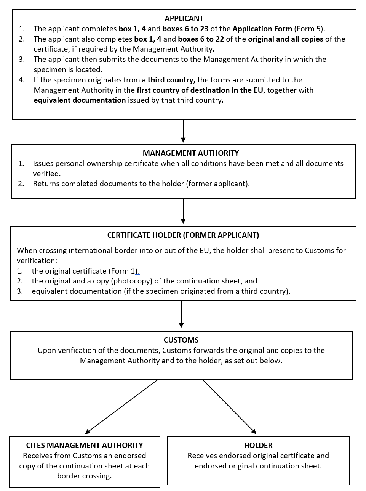
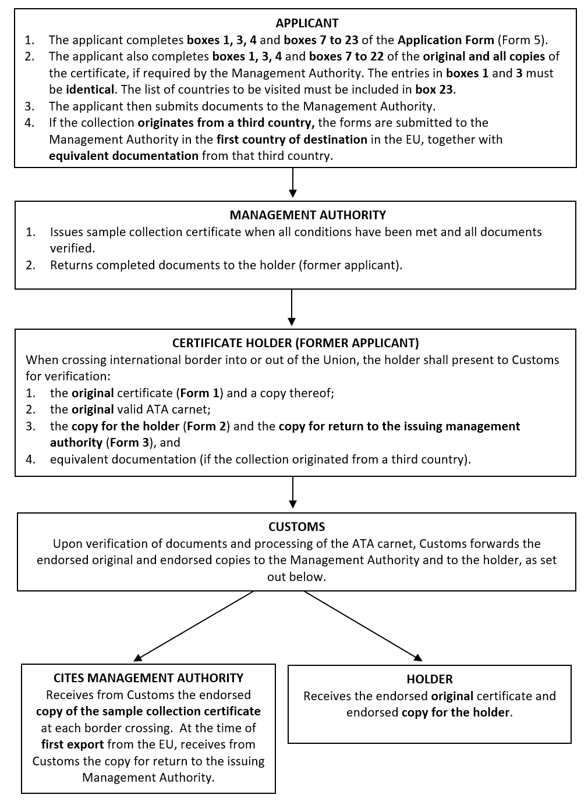

4.6.1 Are there streamlined procedures for travelling exhibitions?
Travelling exhibition certificates1 are used for specimens of species listed in the Annexes that are frequently transported across borders in order to be displayed to the public in travelling exhibitions.
A travelling exhibition is a sample collection, circus, menagerie, plant exhibition, orchestra or museums exhibition that is used for commercial display for the public2.
A travelling exhibition certificate makes travelling with specimens of species listed in the Annexes of the EU Wildlife Trade Regulations much easier, because it may be used more than once providing that all the required conditions are met. Therefore, it precludes the need for application for CITES permits each time an international border is crossed, since it is accompanied by a continuation sheet which can be endorsed by Customs offices more than once. The type and colour of the paper used for the travelling exhibition certificates should be as detailed in Table 13.
Table 13: Documents required as part of a travelling exhibition certificate3
| Type of document | Form Number | Colour |
|---|---|---|
| Original | Form number 1 | Yellow with grey guilloche |
| Issuing Management Authority | Form number 2 | Pink |
| Application form | Form number 3 | White |
| Continuation sheets & labels | White |
4.6.1.1 In which cases can travelling exhibition certificates be used?
Travelling exhibition certificates can only be used for specimens which were legally acquired and which were:
born and bred in captivity in accordance with Articles 54 and 55 of Regulation (EC) No 865/2006;
artificially propagated in accordance with Article 56 of Regulation (EC) No 865/2006 as amended by paragraph 14 of Regulation (EU) No 791/2012, or
acquired or introduced into the EU before CITES provisions or EU Regulations were applicable to them (see also Section 4.3.2 on “pre-Convention specimens)4.
In the case of live animals, a travelling exhibition certificate will cover one specimen only5. On the other hand, for dead specimens, parts and derivatives, one certificate can cover more than one specimen.
In the case of ivory, at the 28th Meeting of the Group of Experts of the Competent CITES Management Authorities the group agreed that travelling exhibition certificates cannot be issued for any items, except within the framework and conditions of the two existing exemptions for international trade (musical instruments and antiques sold to museums).
4.6.1.2 How are travelling exhibition certificates used?
A travelling exhibition certificate may be used in place of an import permit, export permit or re-export certificate. It may also be used as an internal trade certificate, exempting the holder from the prohibition to display the specimens to the public for commercial purposes (see Section 5.1)6.
4.6.1.3 Where can travelling exhibition certificates be obtained, and what requirements apply when using them?
If the travelling exhibition originates in the EU, the applicant should apply to the Management Authority of the Member State from which the travelling exhibition originates. Detailed steps regarding application and issuance of a travelling exhibition certificate are provided in Figure 97.
If the travelling exhibition originates in a country outside the EU, the Management Authority of the EU Member State that is the first country of destination for the travelling exhibition should issue the travelling exhibition certificate. In this case, a travelling exhibition certificate should be issued only when equivalent documentation has been provided by the country of export8.
Figure 10 provides an example of a travelling exhibition certificate.
If an animal covered by a travelling exhibition certificate gives birth whilst the exhibition is in a Member State, the Management Authority of that State must be notified and a certificate issued, or a permit issued (as appropriate), if the offspring is to be used for purposes other than the travelling exhibition9.
Specimens which are covered by a travelling exhibition certificate must be:
- uniquely and permanently marked either in accordance with Article 66 of Regulation (EC) No 865/2006 in the case of live animals (see Section 7 on marking methods), or in a way which enables the authorities of each Member State to verify that the animal covered by the travelling exhibition certificate corresponds to the specimen;
- registered by the issuing Management Authority, unless the specimens originated from a country outside the EU;
- returned to the Member State in which they are registered prior to the expiry of the certificate unless they originated from a country outside the EU10.
Where the specimens originated from outside the EU (i.e. from a third country), the certificate must include the following text in box 20 of the form:
This certificate is not valid unless accompanied by an original travelling exhibition certificate issued by a third country11.
The forms for travelling exhibition certificates, and the accompanying continuation sheet that must be endorsed by Customs whenever a border is crossed, are provided respectively in Annexes III and IV of Regulation (EU) No 792/2012, and also for reference as Figures 10 and 11 of this Guide.
Travelling exhibition certificates issued by an EU Management Authority are valid for three years12 (see Section 8.2)
Figure 9: Steps involved in the application and issuance of a travelling exhibition certificate

Figure 10: Travelling exhibition certificate

Figure 11: Continuation sheet for travelling exhibition, musical instrument and personal ownership certificates

4.6.2 Are there streamlined procedures for the non-commercial cross-border movement of musical instruments?
Musical instrument certificates13 can be used for the non-commercial cross-border movement of musical instruments for purposes including, but not limited to, personal use, performance, production (recordings), broadcast, teaching, display or competition. Such certificates may be used for instruments derived from species listed in Annexes A, B or C of the Regulations, with the exception of specimens of species listed in Annex A that were acquired after the species was included in the CITES Appendices.
A musical instrument certificate makes travelling with instruments derived from species listed in the Annexes of the EU Wildlife Trade Regulations much easier, because it may be used more than once, providing that all the required conditions are met. Therefore, it precludes the need for application for CITES permits each time an international border is crossed, since it is accompanied by a continuation sheet that can be endorsed by Customs offices more than once. The type and colour of the paper used for the musical instrument certificates should be as detailed in Table 14.
Table 14: Documents required as part of a musical instrument certificate13
| Type of document | Form Number | Colour |
|---|---|---|
| Original | Form number 1 | White with grey guilloche |
| Copy for the holder | Form number 2 | Yellow |
| Copy for return by Customs to the issuing authority | Form number 3 | Pale green |
| Copy for issuing authority | Form number 4 | Pink |
| Application form | Form number 5 | White |
| Continuation sheets | White |
4.6.2.1 In which cases can musical instrument certificates be used?
Musical instrument certificates can only be used for non-commercial cross-border movements of musical instruments, where the specimen used in the manufacture of the musical instrument concerned has been legally acquired and where the musical instrument is appropriately identified (see Section 4.6.2.3)14.
A musical instrument certificate may only be issued for an instrument derived from an Annex A-listed species when pre-Convention acquisition of the specimen has been proven.14 Musical instruments derived from an Annex A-listed species for which pre-Convention acquisition cannot be proven may be (re-)exported or imported from/into the EU as “personal effects or household goods” provided certain conditions are met (see Section 4.4).
A musical instrument certificate may also be used for instruments that are transported together in a freight or cargo consignment of an orchestra if the instruments are intended to be used for performances by the musicians travelling with the orchestra. A separate musical instrument certificate must be issued for each instrument in the consignment. It is advised that each musician provides an informal power of attorney authorising the orchestra to include their instrument in the orchestra’s freight or cargo consignment.
4.6.2.2 How are musical instrument certificates used?
A musical instrument certificate may be used in place of an import permit, export permit or re-export certificate15.
4.6.2.3 Where can musical instrument certificates be obtained, and what requirements apply when using them?
The applicant should apply to the Management Authority in their Member State of usual residence16. Detailed steps regarding application and issuance of a musical instrument certificate are provided in Figure 12.
The form to be used for a musical instrument certificate is the same as for an import or export permit or a re-export certificate (see Figure 2 and Table 7). However, the box ‘Other’ should be crossed. The description of the instrument in the form (box 8) should allow the competent authority to verify that the certificate corresponds to the specimen being imported or exported, and the description should include elements such as the manufacturer’s name, the serial number or other means of identification such as photographs17.
The form is accompanied by a continuation sheet similar to that used with a travelling exhibition certificate18 (see Figure 11), that is endorsed by Customs whenever a border is crossed. Musical instrument certificates issued by an EU Management Authority are valid for three years18 (see Section 8.2).
In box 23 of the musical instrument certificate, or in an appropriate annex to the certificate, the following text must be inserted19:
Valid for multiple cross-border movements. Original to be retained by holder.
The musical instrument covered by this certificate, which permits multiple cross-border movements, is for non-commercial use for purposes including, but not limited to, personal use, performance, production (recordings), broadcast, teaching, display or competition. The musical instrument covered by this certificate may not be sold or possession of it transferred whilst it is outside the State in which the certificate was issued.
This certificate must be returned to the management authority of the State which issued the certificate before the expiration of the certificate.
This certificate is not valid unless accompanied by a continuation sheet, which must be stamped and signed by a customs official at each border crossing.
A specimen which is covered by a musical instrument certificate must be20:
- registered by the certificate-issuing Management Authority;
- returned to the Member State in which it is registered prior to the expiry of the certificate**;** and
- appropriately identified.
A specimen covered by a musical instrument certificate may not be sold or possession of it transferred whilst outside the applicant’s State of usual residence21. If an owner wishes to sell the specimen covered by a musical instrument certificate, they must first surrender the certificate to the issuing management authority. In order to keep/offer a specimen listed in Annex A for sale in the EU, the owner must apply to the relevant authority for a certificate in accordance with Article 8(3) of Regulation (EC) No 338/9722 (see Section 5). For sale outside of the EU, the provisions of Regulation (EC) No 338/97 on exports (and associated documentation) will apply – for further information see Section 3.5 above.
The forms on which musical instrument certificates should be drawn up must conform to the model set out in Annex I and, for the continuation sheet, to the model set out in Annex IV of Regulation (EU) No 792/2012 (see also Figures 2 and 11).
4.6.2.4 How does the EU treat musical instrument certificates issued by third (non-EU) countries?***
An instrument covered by a musical instrument certificate issued by a third country may be introduced into the EU, or re-exported from the EU, without requiring the presentation of a (re)export document or an import permit, provided that the musical instrument certificate was issued by the third country under similar conditions to those described in Articles 44h and 44j of Regulation (EC) No 865/2006 (see above).
Figure 12: Steps involved in the application and issuance of a musical instrument certificate

4.6.3 Are there simpler procedures for personally owned live animals (e.g. pets, etc.)?
Personal ownership certificates23 can be used to facilitate travel with personally-owned live animals of species listed in Annexes A, B or C of the Regulations, provided that those animals are held for personal non-commercial purposes only. A personal ownership certificate may be used more than once, providing that all conditions are met, thereby precluding the need for application for CITES permits each time an international border is crossed.
Personal ownership certificates are not issued for plants or dead animals, or their parts or derivatives.
4.6.3.1 When can personal ownership certificates be used?
Personal ownership certificates may only be issued for legally acquired live animals held for personal, non-commercial purposes24.
A personal ownership certificate can only cover one specimen25.
4.6.3.2 How are personal ownership certificates used?
A personal ownership certificate may be used in place of an import permit. If the country of destination agrees (Management Authority will advise on this), it may also be used as an export permit or re-export certificate26.
The specimen must be accompanied by the owner when crossing an international border.
4.6.3.3 Where can a personal ownership certificate be obtained, and what requirements apply?
The form to be used for a personal ownership certificate is the same as for an import or export permit or a re-export certificate (see Figure 2 and Table 7). However, the box ‘Other’ should be crossed. Detailed steps on application and issuance are provided in Figure 13. The form is accompanied by a continuation sheet similar to that used with a travelling exhibition certificate27 (see Figure 11), that is endorsed by Customs whenever a border is crossed. Personal ownership certificates issued by an EU Management Authority are valid for three years27 (see Section 8.2).
If the specimen originates from within the EU, the applicant should apply to the Management Authority of the Member State where the specimen is located28.
If the specimen originates from a country outside of the EU, the Management Authority of the EU Member State that was the first country of destination for the specimen issues the personal ownership certificate, on the condition that equivalent documentation from the country of export has been provided by the holder to that EU Management Authority29.
In box 23 of the personal ownership certificate, or in an appropriate annex to the certificate, the following text must be inserted30:
Valid for multiple cross-border movements where the specimen is accompanied by its owner. Legal owner to retain original form.
The specimen covered by this certificate may not be sold or otherwise transferred except in accordance with Article 43 of Commission Regulation (EC) No. 865/2006. This certificate is non-transferable. If the specimen dies, is stolen, destroyed, or lost, or if it is sold or ownership of the specimen is otherwise transferred, this certificate must be immediately returned to the issuing Management Authority.
This certificate is not valid unless accompanied by a continuation sheet, which must be stamped and signed by a Customs official at each border crossing.
This certificate shall in no way affect the right of States to adopt stricter domestic measures regarding restrictions or conditions for the holding/keeping of live animals.
If an animal covered by a personal ownership certificate gives birth whilst in a Member State, the Management Authority of that State must be notified and a certificate issued (or a permit if the offspring is to be used for purposes other than as a personal pet), as appropriate31.
4.6.3.4 What other conditions apply to a personal ownership certificate
All live animal specimens must be uniquely and permanently marked in accordance with Article 66 of Regulation (EC) No 865/2006 (see Section 7 on marking methods), in order that the authorities may verify that the animal covered by the personal ownership certificate corresponds to the animal being imported/exported32.
Specimens which are covered by a personal ownership certificate must be registered by the certificate-issuing authority, and returned to the Member State in which they were registered prior to the expiry of the certificate, unless they originated from a country outside of the EU33. Where the specimens originated from outside of the EU (a third country), the certificate must include the following text in box 20 of the form34:
This certificate is not valid unless accompanied by an original personal ownership certificate issued by a third country and unless the specimen to which it relates is accompanied by its owner.
Specimens covered by a personal ownership certificate may not be used for commercial purposes35. If the owner wishes to sell the specimen, they must first surrender the certificate to the issuing authority. In order to keep/offer a specimen listed in Annex A for sale in the EU, the owner must apply to the relevant authority for a certificate in accordance with Article 8(3) of Regulation (EC) No 338/9736 (see Section 5). Such a certificate will also be required in the case of Annex B specimens for which it is not possible to prove they were legally acquired in (and, if originating outside of the EU, introduced into) the EU37. For sale outside of the EU, the provisions of Regulation (EC) No 338/97 on exports (and associated documentation) will apply – for further information see Section 3.5 above.
The forms on which personal ownership certificates should be drawn up must conform to the model set out in Annex I and, for the continuation sheet, to the model set out in Annex IV of Regulation (EU) No 792/2012 (see also Figures 2 and 11).
Figure 13: Steps involved in the application and issuance of a personal ownership certificate

4.6.4 Are there simplified procedures for sample collections?
Sample collection certificates38 may be issued in respect of sample collections, provided those collections are accompanied by a valid ATA carnet39.
4.6.4.1 When can sample collection certificates be used?
Sample collection certificates can be used for collections of legally acquired dead specimens of species listed in Annexes A, B or C of Regulation (EC) No 338/97 (as well as parts and derivatives thereof) which are transported across borders for presentation purposes40. Specimens, parts or derivatives of species listed in Annex A must also:
in the case of animal specimens, be of captive born and bred origin in accordance with Articles 54 and 55 of Regulation (EC) No 865/2006, or
in the case of plant specimens, be artificially propagated in accordance with Article 56 of Regulation (EC) No 865/2006.
4.6.4.2 What can sample collection certificates be used for?
A sample collection certificate may be used in place of41:
an import permit;
an export permit or re-export certificate (if the country of destination recognises and allows the use of ATA carnets), and
an internal trade certificate, exempting the holder from the prohibition to display the specimens to the public for commercial purposes (see Section 5).
4.6.4.3 How are sample collection certificates obtained and what requirements apply when using them?
The form to be used for a sample collection certificate is the same as for an import or export permit or a re-export certificate42 (see Figure 2 and Table 7). However, the certificate must indicate that the document is for “Other: Sample Collection” and the number of the accompanying ATA carnet should be included in box 2343. The following text should also be included in box 23 or in an appropriate annex to the certificate:
For sample collection accompanied by ATA carnet No. xxx.
This certificate covers a sample collection and is not valid unless accompanied by a valid ATA carnet. This certificate is non-transferable. The specimens covered by this certificate may not be sold or otherwise transferred whilst outside the territory of the State that issued this document. This certificate may be used for (re-)export from [indicate country of (re-) export] via [indicate countries to be visited] for presentation purposes and import back to [indicate country of (re-)export].
Detailed steps on application and issuance are provided in Figure 14.
If the sample collection originates in the EU, the applicant should apply to the Management Authority of the Member State in which the collection originates44.
If the sample collection originates in a country outside of the EU, the Management Authority of the EU Member State that is the first country of destination for the collection should issue the sample collection certificate45. In the latter case, a sample collection certificate should be issued only when equivalent documentation has been provided by the country of export and the certificate must include the following text in box 23 of the form (instead of that set out above)46:
This certificate is not valid unless accompanied by an original CITES document issued by a third country in accordance with the provision established by the Conference of the Parties to the Convention.
A sample collection covered by a sample collection certificate must be re-imported into the EU before the date of expiry of the certificate. The specimens may also not be sold or otherwise transferred whilst outside the territory of the EU Member State that issued the certificate. If the specimens covered by the certificate are stolen, destroyed, or lost, the issuing Management Authority and the Management Authority of the country in which this occurred will be immediately informed47.
Sample collection certificates issued by an EU Management Authority are valid for six months48.
Figure 14: Steps involved in the application and issuance of a sample collection certificate

-
Articles 30 to 36 Regulation (EC) No 865/2006 ↩
-
Article 1(6) Regulation (EC) No 865/2006 ↩
-
Articles 2 and 3 Regulation (EU) No 792/2012 ↩
-
Article 30(1) Regulation (EC) No 865/2006 ↩
-
Article 30(2) Regulation (EC) No 865/2006 ↩
-
Article 31 Regulation (EC) No 865/2006 ↩
-
Article 32(1) Regulation (EC) No 865/2006 ↩
-
Article 32(2)* Regulation (EC) No 865/2006* ↩
-
Article 32(3) Regulation (EC) No 865/2006 ↩
-
Article 33(1) Regulation (EC) No 865/2006 ↩
-
Article 33(2) Regulation (EC) No 865/2006 ↩
-
Article 10(3) Regulation (EC) No 865/2006 ↩
-
Articles 44h to 44p *Regulation (EC) No 865/2006 * ↩
-
Article 44h(1) Regulation (EC) No 865/2006 ↩
-
Article 44i Regulation (EC) No 865/2006 ↩
-
Article 44j(1) Regulation (EC) No 865/2006 ↩
-
Paragraph 8 of the Instructions and explanations to Annex I Regulation (EU) No 792/2012 ↩
-
Article 44h(2) *Regulation (EC) No 865/2006 *and Annex IV Regulation (EU) No 792/2012 ↩
-
Article 44j(2) Regulation (EC) No 865/2006 ↩
-
Article 44k Regulation (EC) No 865/2006 ↩
-
Article 44k(c) Regulation (EC) No 865/2006 ↩
-
Article 44n Regulation (EC) No 865/2006 ↩
-
Articles 37 to 44 Regulation (EC) No 865/2006. ↩
-
Article 37(1) *Regulation (EC) No 865/2006 * ↩
-
Article 37(2) Regulation (EC) No 865/2006 ↩
-
Article 38 Regulation (EC) No 865/2006 ↩
-
Annex IV Regulation (EU) No 792/2012 ↩
-
Article 39(1) Regulation (EC) No 865/2006 ↩
-
Article 39(2) Regulation (EC) No 865/2006 ↩
-
Article 39(3) Regulation (EC) No 865/2006 ↩
-
Article 39(4) Regulation (EC) No 865/2006 ↩
-
Article 40(1)(d) Regulation (EC) No 865/2006 ↩
-
Articles 40(1)(a) and (b) Regulation (EC) No 865/2006 ↩
-
Article 40(2) Regulation (EC) No 865/2006 ↩
-
Article 40(1)(c) Regulation (EC) No 865/2006 ↩
-
Article 43 Regulation (EC) No 865/2006 ↩
-
Article 8(5) Regulation (EC) No 338/97 ↩
-
Articles 44a to 44g Regulation (EC) No 865/2006 ↩
-
The ATA carnet is an international Customs document that can be used in different countries around the world to cover temporary use of goods without payment of Customs charges. Using a carnet simplifies Customs clearance of goods in exporting and importing countries by replacing Customs documents that would normally be required (https://iccwbo.org/resources-for-business/ata-carnet/). ↩
-
Article 44a Regulation (EC) No 865/2006 ↩
-
Article 44b Regulation (EC) No 865/2006 ↩
-
Annex I Regulation (EU) No 792/2012 ↩
-
Article 44d(4) Regulation (EC) No 865/2006 ↩
-
Article 44c(1) Regulation (EC) No 865/2006 ↩
-
Article 44c(2) Regulation (EC) No 865/2006 ↩
-
Article 44d(5) Regulation (EC) No 865/2006 ↩
-
Article 44d Regulation (EC) No 865/2006 ↩
-
Article 10(3a) Regulation (EC) No 865/2006 ↩